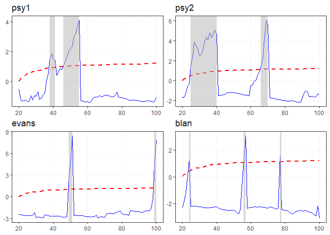

Testing for and dating periods of explosive dynamics (exuberance) in time series using the univariate and panel recursive unit root tests proposed by Phillips et al. (2015) and Pavlidis et al. (2016). The recursive least-squares algorithm utilizes the matrix inversion lemma to avoid matrix inversion which results in significant speed improvements. Simulation of a variety of periodically-collapsing bubble processes.
Overview
Testing for explosive dynamics is comprised of two distinct parts :
- Estimation
- Critical Values
Some Context: Conventional testing techniques compute critical values,and p-values from a standard distribution, where the user does not need to specify critical values explicitly. However, the recent literature in explosive dynamics require the use of non-standard distributions, which require the use of techniques that sample empirical distributions in order to calculate the critical values.
Estimation
The cornerstone function of the package is:
-
radf(): Recursive Augmented Dickey-Fuller Test.
This function offers a vectorized estimation (i.e. single and/or multiple time-series) for individual and panel estimation. The estimation can parse data from multiple classes and handle dates as index.
Critical Values
There are several options for generating critical values:
-
radf_mc_cv(): Monte Carlo -
radf_wb_cv(): Wild Bootstrap -
radf_sb_cv(): Sieve Bootstrap (Panel)
On default exuber will use Monte Carlo simulated critical values if no other option is provided. The package offers these critical values in the form of data (up to 600 observations), that are obtained with the radf_mc_cv() function.
Analysis
For the analysis you should include both the output from estimation (object) and the critical values (cv). The below methods break the process into small simple steps:
-
summary()summarizes the model. -
diagnostics()shows which series reject the null hypothesis . -
datestamp()computes the origination, termination and duration of episodes (if any).
These combined provide a comprehensive analysis on the exuberant behavior of the model.
Installation
# Install release version from CRAN install.packages("exuber")
You can install the development version of exuber from GitHub.
# install.packages("devtools") devtools::install_github("kvasilopoulos/exuber")
If you encounter a clear bug, please file a reproducible example on GitHub.
Usage
library(exuber) rsim_data <- radf(sim_data) summary(rsim_data) #> Using 'radf_crit' for 'cv'. #> #> -- Summary (minw = 19, lag = 0) ------------------------------------- Monte Carlo (nrep = 2000) -- #> #> psy1 : #> # A tibble: 3 x 5 #> name tstat `90` `95` `99` #> <fct> <dbl> <dbl> <dbl> <dbl> #> 1 adf -2.46 -0.413 -0.0812 0.652 #> 2 sadf 1.95 0.988 1.29 1.92 #> 3 gsadf 5.19 1.71 1.97 2.57 #> #> psy2 : #> # A tibble: 3 x 5 #> name tstat `90` `95` `99` #> <fct> <dbl> <dbl> <dbl> <dbl> #> 1 adf -2.86 -0.413 -0.0812 0.652 #> 2 sadf 7.88 0.988 1.29 1.92 #> 3 gsadf 7.88 1.71 1.97 2.57 #> #> evans : #> # A tibble: 3 x 5 #> name tstat `90` `95` `99` #> <fct> <dbl> <dbl> <dbl> <dbl> #> 1 adf -5.83 -0.413 -0.0812 0.652 #> 2 sadf 5.28 0.988 1.29 1.92 #> 3 gsadf 5.99 1.71 1.97 2.57 #> #> div : #> # A tibble: 3 x 5 #> name tstat `90` `95` `99` #> <fct> <dbl> <dbl> <dbl> <dbl> #> 1 adf -1.95 -0.413 -0.0812 0.652 #> 2 sadf 1.11 0.988 1.29 1.92 #> 3 gsadf 1.34 1.71 1.97 2.57 #> #> blan : #> # A tibble: 3 x 5 #> name tstat `90` `95` `99` #> <fct> <dbl> <dbl> <dbl> <dbl> #> 1 adf -5.15 -0.413 -0.0812 0.652 #> 2 sadf 3.93 0.988 1.29 1.92 #> 3 gsadf 11.0 1.71 1.97 2.57 diagnostics(rsim_data) #> Using 'radf_crit' for 'cv'. #> #> -- Diagnostics (option = gsadf) --------------------------------------------------- Monte Carlo -- #> #> psy1: Rejects H0 at the 1% significance level #> psy2: Rejects H0 at the 1% significance level #> evans: Rejects H0 at the 1% significance level #> div: Cannot reject H0 #> blan: Rejects H0 at the 1% significance level datestamp(rsim_data) #> Using 'radf_crit' for 'cv'. #> #> -- Datestamp (min_duration = 0) --------------------------------------------------- Monte Carlo -- #> #> psy1 : #> Start End Duration #> 1 44 55 11 #> #> psy2 : #> Start End Duration #> 1 22 40 18 #> 2 62 70 8 #> #> evans : #> Start End Duration #> 1 20 21 1 #> 2 44 45 1 #> 3 66 67 1 #> #> blan : #> Start End Duration #> 1 34 36 2 #> 2 84 86 2 autoplot(rsim_data) #> Using 'radf_crit' for 'cv'.

Please note that the ‘exuber’ project is released with a Contributor Code of Conduct. By contributing to this project, you agree to abide by its terms.